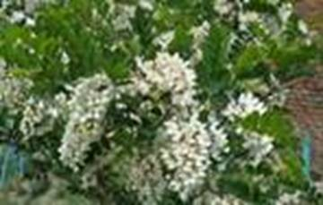
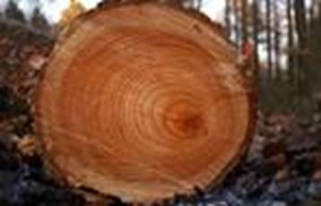
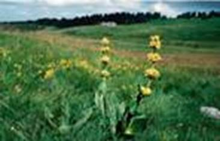
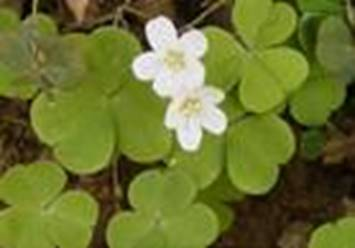
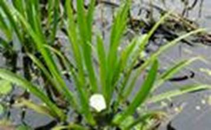
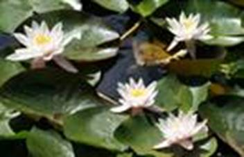
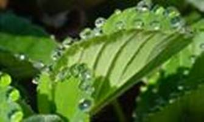
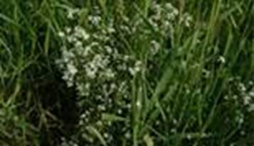
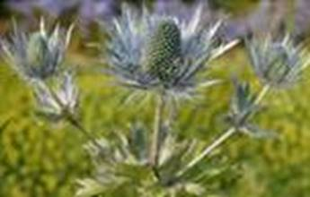
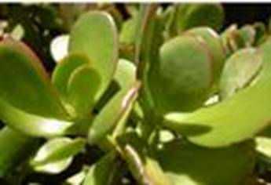

Экологические группы растений, в отличие от систематических, объединяют неродственные друг другу растения. Каждый вид растений входит сразу во многие экологические группы.
Экологические группы растений выделяют по предпочитаемым условиям жизни, т.е. по предпочитаемым значениям экологических факторов. Так, тенелюбивые растения живут при небольшой освещенности, высокая освещенность для них губительна.
Гелиофиты: сосна, береза, лиственница, робиния (см. Рис. 1).

Рис. 1. Робиния
Деревья невысокие, с широкой разветвленной кроной. В лесу такие деревья высокие, с кроной, расположенной на вершине. У деревьев на опушке крона однобокая, если их спилить, то годичные кольца окажутся шире на освещенной стороне (см. Рис. 2).

Рис. 2. Годичные кольца
Травянистые светолюбивые растения образуют низкорослые или розеточные стебли (подорожник, одуванчик, камнеломка). Луговые травы (горечавка (см. Рис. 3), иван-чай) имеют вытянутые стебли.

Рис. 3. Горечавка желтая
Листья светолюбивых растений небольшие, толстые, с блестящей кожицей и большим количеством устьиц. Толстый восковой налет и густое белое опушение предохраняют растения от действия прямых солнечных лучей. Листья могут располагаться вертикально к солнцу или повернуто к нему ребром (эвкалипт).
Листья имеют светло-зеленую окраску, так как в клетках мякоти листа немного хлоропластов. Хорошо развиты механическая и проводящая ткани. Глубокая корневая система.
Сциофиты, как правило, растут в нижних ярусах листьев. Представители: майник, вороний глаз, ветреница. Они растут в условиях повышенной влажности, пониженной температуры, небольшой освещенности.
Механические и проводящие ткани развиты слабо, поэтому побеги нежные и хрупкие. Листовые пластинки широкие и тонкие (кислица (см. Рис. 4)).

Рис. 4. Кислица
Кожица листьев тонкая, много хлоропластов, что обеспечивает фотосинтез при рассеянном свете. Устьица могут располагаться на обеих сторонах листа.
Гидрофиты – растения водных местообитаний (телорез (см. Рис. 5)). Имеют большое соотношение площади тела к массе. Поглощают воду всей поверхностью тела. Слабо развита или отсутствует корневая система (элодея, перистолистник). На подводных листьях нет устьиц. Слабо развиты механические ткани, растения способны поддерживать вертикальное положение только в воде.

Рис. 5. Телорез
На верхней стороне листьев растений, плавающих на поверхности водоема, образуются многочисленные устьица (кувшинка белая (см. Рис. 6), виктория амазонская). Они обеспечивают интенсивный газообмен и испарение. Это необходимо, потому что листья быстро нагреваются. Листья покрыты глянцевой кожицей, с которой скатывается вода.

Рис. 6. Кувшинка белая
Межклетники заполнены воздухом. Развита воздухоносная ткань, снабжающая подводные органы.
Сухопутные растения, живущие во влажной среде, не выносят иссушения. Они не могут регулировать транспирацию. Они вянут и погибают при засухе.
Сюда относятся сциофиты. Они имеют слабую корневую систему и устьица, расположенные с обеих сторон листа. Также имеются гидатоды – органы, через которые из растительного организма удаляются излишки воды. Поэтому на такие растениях можно увидеть капли воды – плач растений (см. Рис. 7).

Рис. 7. Плач растений
Также к этой группе относятся гигрофиты – растения, обитающие на переувлажненных почвах, в условиях достаточного освещения. Это калужница болотная, подмаренник болотный (см. Рис. 8), рогоз, тростник. Слабо развитая корневая система. Развита система межклетников, воздухоносная ткань. Такие растений имеют признаки гелиофитов: хорошо развиты механическая и проводящая ткань, устьица с нижней стороны листа.

Рис. 8. Подмаренник болотный
Растения сухих местообитаний живут при высоком освещении и недостатке влаги. Это обитатели степей, саванн, полупустынь, пустынь. У таких растений есть 2 способа приспособления к недостатку влаги:
· Склерофиты. Испарение малого количества воды. Листья маленькие, сухие, жесткие (эфедра, синеголовник (см. Рис. 9), саксаул), могут быть превращены в колючки. Преобладает механическая ткань.

Рис. 9. Синеголовник
· Суккуленты. Запас воды в разросшихся стеблях, листьях, корнях. Листья имеют плотную кожицу (толстянка (см. Рис. 10)). Могут быть уменьшены и превращены в колючки. Мясистые листья покрыты опушением или водонепроницаемым восковым налетом.

Рис. 10. Толстянка
Список литературы
1. Биология. Бактерии, грибы, растения. 6 кл.: учеб. для общеобразоват. учреждений / В.В. Пасечник. – 14-е изд., стереотип. – М.: Дрофа, 2011. – 304 с.: ил.
2. Тихонова Е.Т., Романова Н.И. Биология, 6. – М.: Русское слово.
3. Исаева Т.А., Романова Н.И. Биология, 6. – М.: Русское слово.
Дополнительные рекомендованные ссылки на ресурсы сети Интернет
1. Derev-grad.ru (Источник).
2. Userdocs.ru (Источник).
3. Tdruv.ru (Источник).
Домашнее задание
1. Биология. Бактерии, грибы, растения. 6 кл.: учеб. для общеобразоват. учреждений / В.В. Пасечник. – 14-е изд., стереотип. – М.: Дрофа, 2011. – 304 с.: ил. – с. 269, задания и вопросы 3, 4 (Источник).
2. Какие существуют приспособления растений к жизни в воде?
3. Какие выделяют группы растений, живущих в засушливых местообитаниях? Охарактеризуйте их.
4. * Сможет ли растение умеренной зоны обитания выжить при резких изменениях условий окружающей среды: резком похолодании/потеплении, засухе/повышенной влажности?